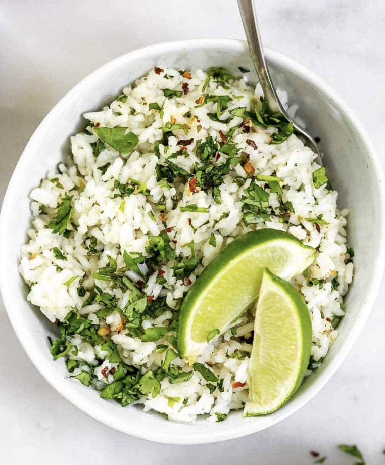

Cilantro Lime Rice

Description
A medley of flavors combine to make a fresh herby buttery rice dish that will elevate any meal.
Ingredients
- Basmati rice X 1 cup
- Bunch of cilantro
- Salt
- Garlic X 1/2 head
- Butter 1/4 cup
- Water X 2 cups
Recipe
- Gently rinse the rice 3 times
- Place the rice in a pot with water and a pinch of salt
- Bring to a boil, cover and cook for ten minuets
- Chop up cilantro and garlic
- After the rice has sat off heat for 10 minuets add garlic and cilantro
- Cube butter and add to rice
- Salt to taste
- Gently mix
- Enjoy